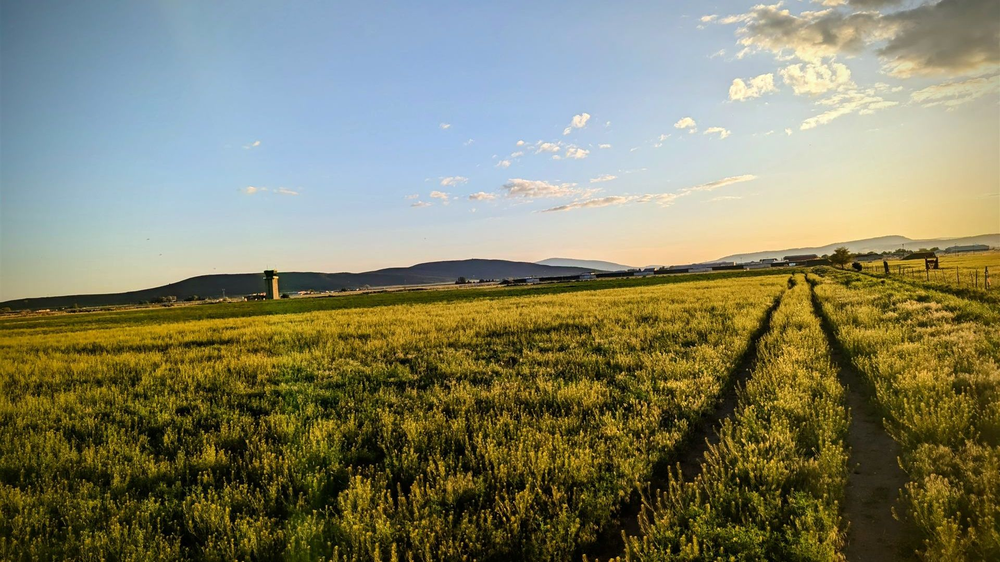
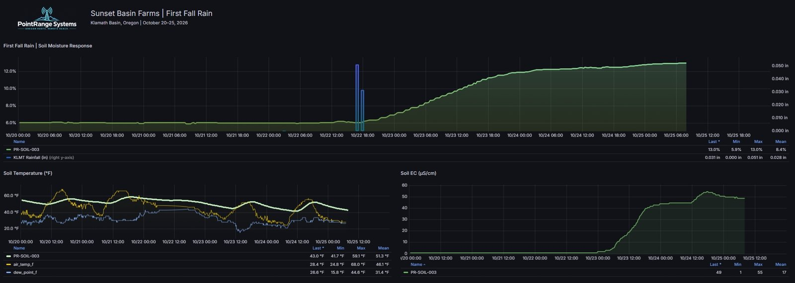
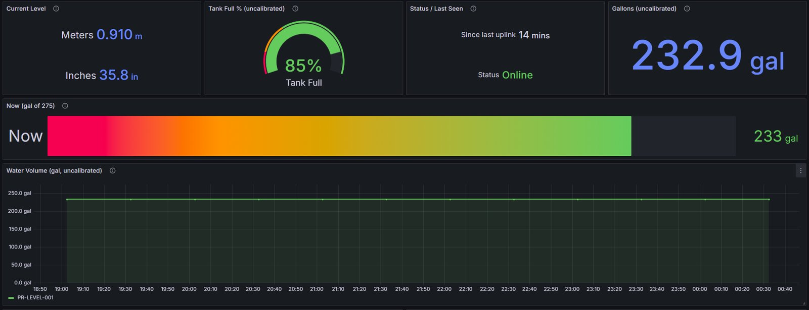
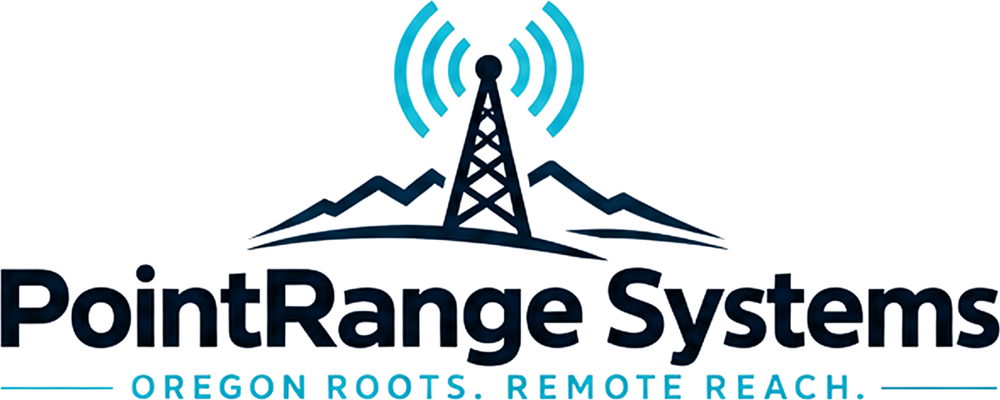

Water tanks, wells & cisterns
Water level around the clock, in inches, percent full and gallons. Get an alert when a tank runs low or a well draws down.

PointRange Systems installs long-range wireless sensors, solar and LTE gateways, and live dashboards that keep watch on your water, soil and remote equipment. When something needs attention, you get an alert on your phone.
We put small, battery-powered sensors where the problems happen, connect them with a long-range wireless network, and show everything on one simple dashboard. We handle the hardware, installation and alerts. You get the answers.
Water level around the clock, in inches, percent full and gallons. Get an alert when a tank runs low or a well draws down.
Know a trough is going dry before the animals do. That means fewer trips across the pasture just to check.
On/off and run-time status for pumps, plus doors, gates and other switches. Know right away if a pump stops or runs when it shouldn’t.
Root-zone moisture and soil temperature. See a field drying out before the crop shows stress, and confirm water actually soaked in.
Pair soil readings with local rain and the forecast to plan around frost, heat and rain, like winter wheat planting.
Battery, signal and check-in health for every device. If a site goes quiet, you hear about it. Silence gets flagged, not ignored.
We walk the property with you, decide what’s worth monitoring, check radio coverage, and give you a clear quote.
We mount the sensors and set up a LoRaWAN gateway on solar or wired power, with an LTE or internet connection. Everything is tested on site.
Sensors report on a schedule over long-range radio. The gateway forwards readings securely to the cloud.
See live readings and history on any device. Get an alert on your phone or by email when a limit you set is crossed.
We watch batteries, signal and check-ins, adjust alerts, and handle maintenance. A local person answers.
Sensors transmit on LoRaWAN (US915). We deploy Dragino LPS8-N and DLOS8N (LTE) gateways, soil moisture/temperature/EC probes, submersible pressure transmitters for tank and well levels, RS485 adapters for industrial sensors, and dry-contact counters for pump status and doors. The back end runs on ChirpStack, MQTT, Node-RED, InfluxDB and PostgreSQL, with Grafana dashboards and uptime monitoring with automated alerts.
Real dashboards from our own sensors near Klamath Falls: a soil station in an idle field and a water tank level sensor.


PointRange Systems is a family-run monitoring company near Klamath Falls, Oregon, and a brand of Sunset Basin Farms LLC. It started on our own farm, where we needed answers we couldn’t get from the surface. Now we bring that same field-tested approach to tanks, wells, troughs, pumps and fields across the region.
Serving the Klamath Basin, Southern Oregon and Northern California.

No. Sensors run on batteries and talk to our gateway over long-range radio. The gateway can send data over cellular (LTE) and run on solar where there’s no outlet.
Often a mile or more in open terrain. Hills, trees and buildings shorten that. We check coverage during the site visit.
Typically years, depending on how often a sensor reports. We monitor battery levels and replace them before they run out.
We set limits with you, like a tank below 30%, a pump that stopped, or a sensor that hasn’t checked in. When one is crossed, you get an alert on your phone and/or by email.
Simple monthly per-site pricing that covers monitoring, dashboard access, alerts and support. Hardware and installation are quoted for your site. Contact us for a quote.
The Klamath Basin, Southern Oregon and Northern California. If you’re farther out, ask anyway.
Send a few details and we’ll follow up to talk through your site and set up a visit.
Email: info@pointrangesystems.com
Call or text: (541) 224-7743